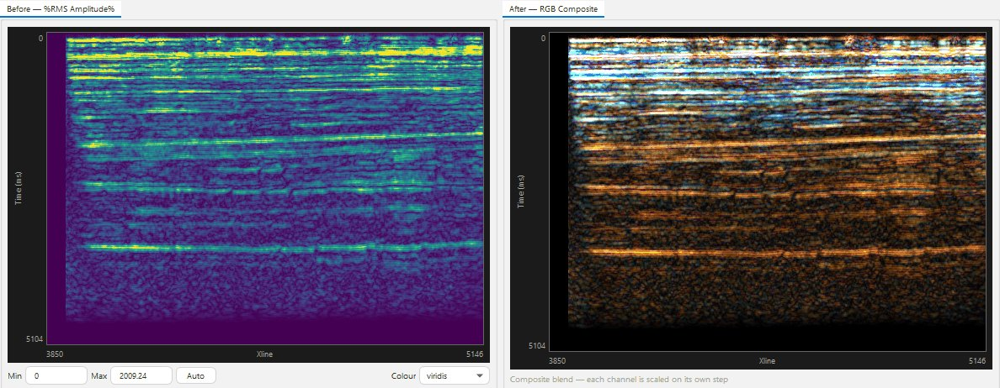
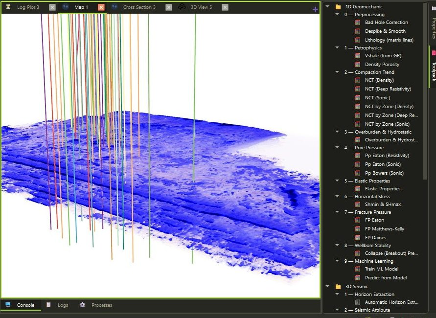
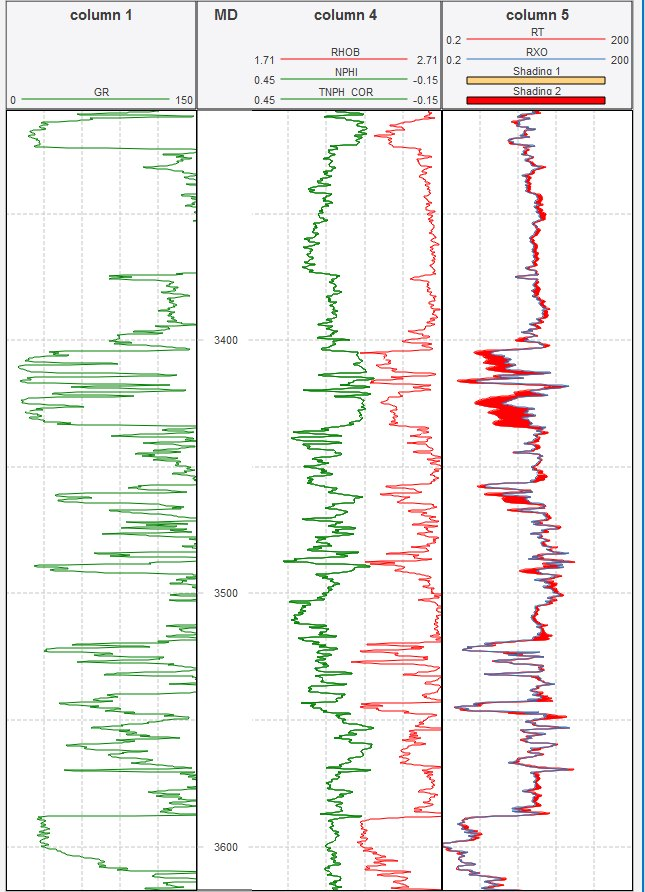
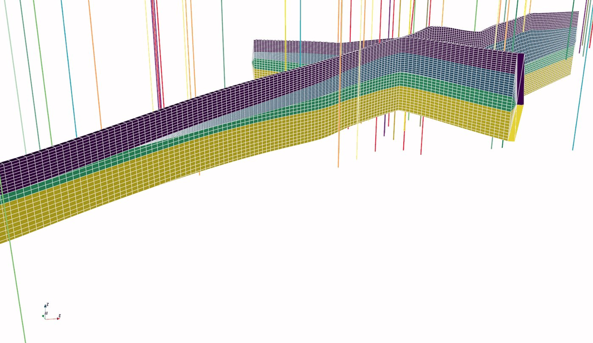
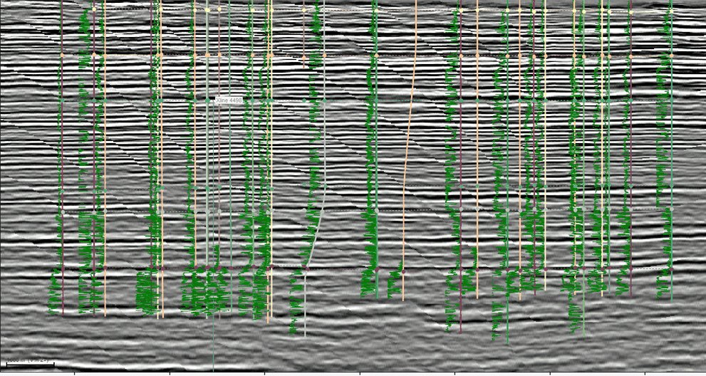

ESCA Geoscience runs geology, geophysics and reservoir studies, collects field analogue data, and builds the software those studies run on.

Our job is to bring a clear picture of the subsurface to the people who have to make decisions about it.
Geology, geophysics and reservoir projects, carried out by our team on our own software.
The software we use in our studies, licensed for your own team, and software built to order.
We focus on two questions: where an accumulation is likely to be, and how to produce it once it is found. Each study is carried out on our in-house software, so the methods and the tools are developed by the same team.
From field records to interpretation-ready seismic, on ESCA Imaging.
Wells, seismic and geological concepts combined in one consistent model.
Development scenarios tested on that model.

Geometry, facies and architecture measured on exposures of comparable rocks.
Recorded so it can sit beside well logs, core and seismic in the same project.
Analogue measurements guide the facies and property models we build.
Interpretation and 3-D geological modelling in one application, with wells, seismic and models in one project.
From field data to interpretation-ready seismic. Built for multi-node computing clusters, highly efficient, and fully compatible with ESCA Subsurface.
Software built for your workflow: web-based or installed on premise, standalone or built on top of ESCA software.




Tell us about your project. We will reply and arrange a conversation.
hello@esca-geoscience.com